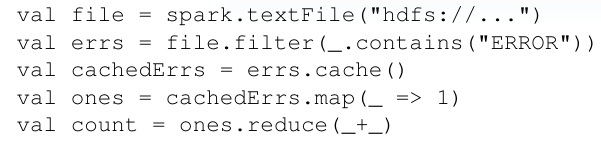
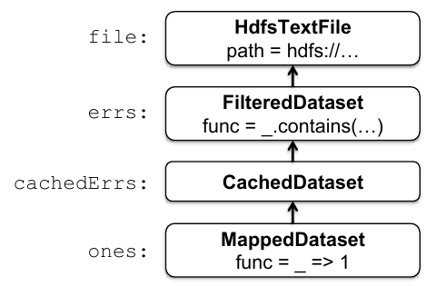
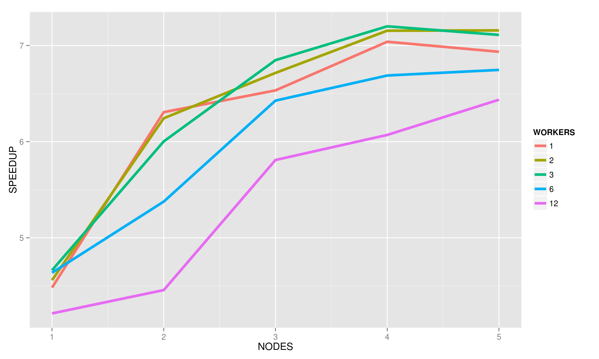
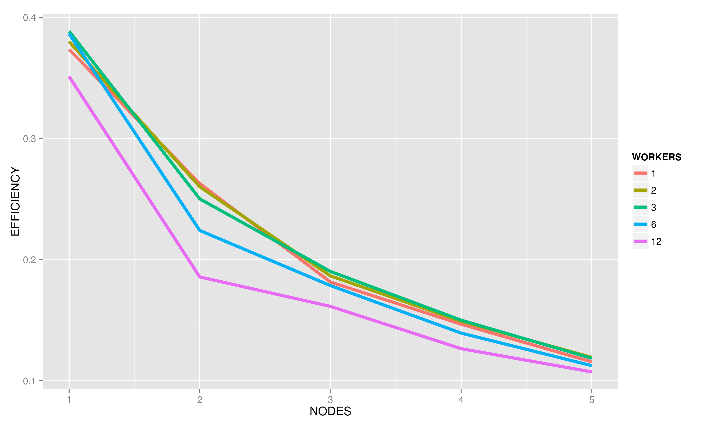

High-Level Data Parallelism with Apache Spark
- Anitha Ganesha
- Ning Gao
- Mike Kasper
- Nick Vanderweit
What is Spark?
Apache Spark is designed as an alternative to MapReduce which addresses some of its performance concerns.
It is meant as a general-purpose framework for highly-parallel data analytics.
MapReduce
MapReduce is a computation model popularized by Google for parallel operations on chunked data. It consists primarily of two kinds of tasks:
- Map, which takes a key-value pair and produces a set of output key-value pairs.
- Reduce, which takes a key and a set of values for that key and produces a set of output values.
MapReduce nodes share and store data using a distributed filesystem like the Hadoop Distributed Filesystem (HDFS). Every task stores its output on this filesystem.
Limitations of MapReduce
(or why Spark was created)
Because every task involves IO, spinning up many tasks in sequence incurs a large performance penalty.
Spark was designed to allow iterative algorithms to keep their results in memory.
Computation Model
Spark's computation is based around Resilient Distributed Datasets (RDDs).
RDDs are chunks of data which may reside on disk, in memory, or may not have been computed at all yet.
By default, applying an operation like map to a dataset simply adds that map to a chain of computations.
RDDs are represented lazily
 RDDs are made by using standard higher-order functions on parallel data structures!
Installation & Profiling
- Web UI & Monitor Logs
- Total runtime
- Application Progress
- Worker tasks competed
- Bytes read
- Execution scripts
- Node & worker count
- Memory per worker
- Cores per worker
- Task size
Parallel Grep
- Check installation/performance
- Compare workers per node
- Running on 1 - 5 nodes
- Limited to 20GB file
- Compared to serial UNIX grep runtime
Grep Speedup
Grep Efficiency
Issues & Possible Solution
- Limited by single node memory size
- Scaling to 50 nodes on larger file showed no speedup
- Possible IO bottleneck
- Larger file size needed
- Perform additional computation (PageRank)
Why Page Rank?
-
Good example of more complex algorithm
-
Benefits of spark's in memory caching
Basic IDEA
-
links from many pages -> high rank
- links from a high rank page ->high rank

Algorithm
- Start each page at a rank of 1
- On each iteration, have page p contribute
(rank)_p/|(neighbors)_p
- Set each page’s rank to 0.15 + 0.85 * contribs.
Dataset
- source: DBPedia(Wikipedia Dump)
- size: 25GB. But successful to run only on 10GB.
- data set format:
- Page URL Property Link URL
- Each page is a vertex of a graph.
- Each link to a neighboring vertex is an edge of the vertex.


What is Bagel
- Spark implementation of Google's graph processing framework called Pregel.
- Programming model:
- Operates on distributed data of (K, V) pairs, where K is a vertex id and V is value of the vertex and associated weights.
Simple versus bagel
- old IMPLEMENTATION of graph algorithm.
Scala Implementation
Analysis on janus
- Scalability test
- In-memory RDD test
- Insufficient memory test
- bagel versus simple
- Data processing skew
1.Scalability test

2. IN MEMORY RDD TEST

3. INSUFFICIENT MEMORY TEST

4. BAGEL VERSUS SIMPLE TEST
Bagel Simple
mem contrast: 8.8GB/node 700MB/nodetime contrast: 168sec 82sec
5. DATA SKEW TEST